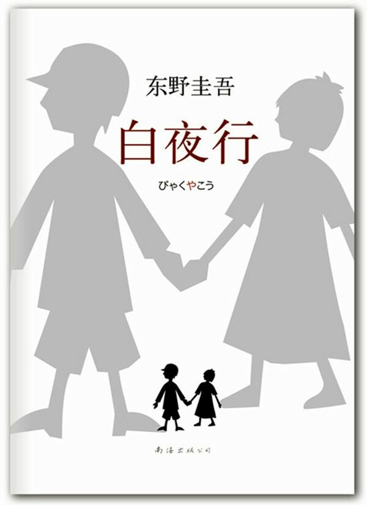
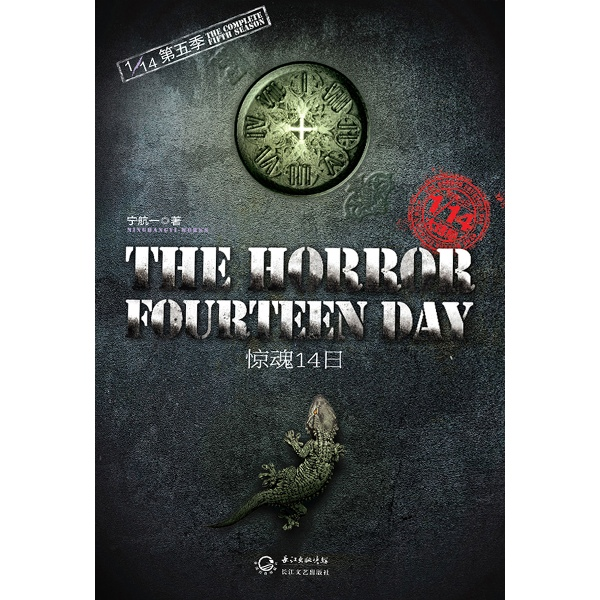
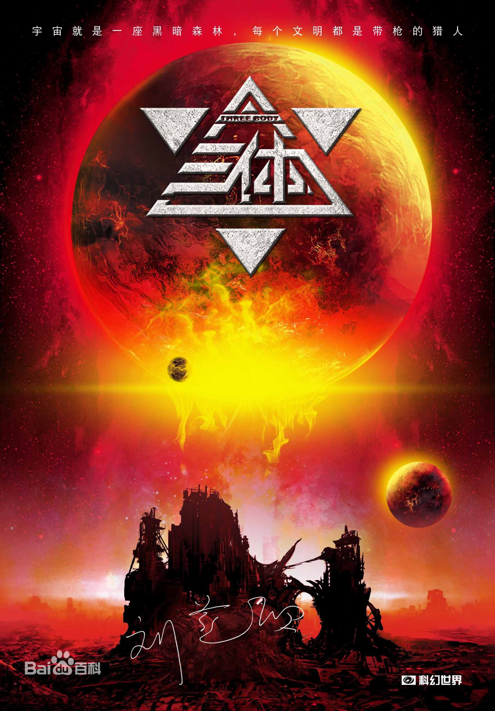
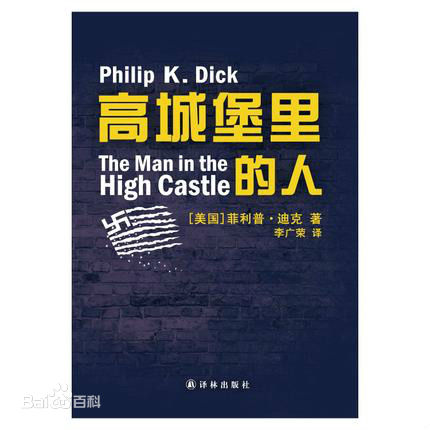
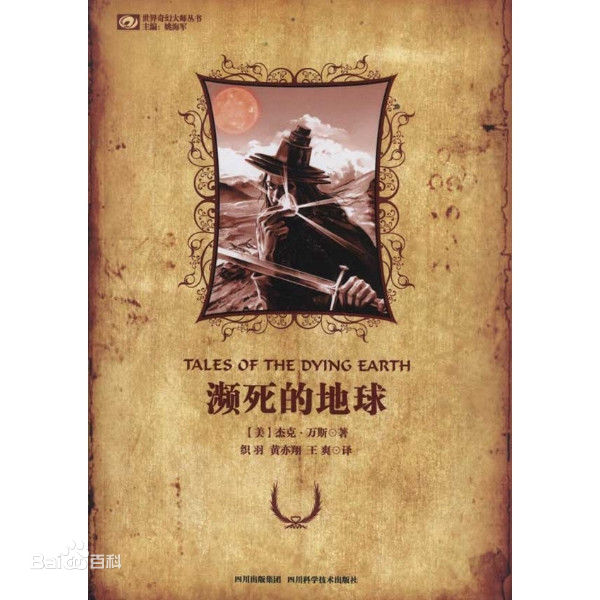

我喜欢的读物
| 推理小说 |  |  | |
|---|---|---|---|
东野圭吾创作的《放学后》中既有青春的欢笑与忧愁，也有人性的幽微与黑暗，从多角度直击日本社会问题，更给人以警示：当美丽、纯粹、真实的事物被破坏，重视的回忆和梦想被摧毁时，恨意便开始萌发，恣意蔓延开来。
《放学后》是东野圭吾早期本格推理的代表作品。东野圭吾早期创作的作品内容以描写犯罪手法为主，对于《放学后》来说，最为出色的内容，就是描写密室杀人和破解的过程，密室本身的构造虽说简单，但是他为了烘托密室杀人的氛围，独具匠心的设计了两个密室诡计，增加了作品的悬念。 |
东野圭吾在讲述《白夜行》的故事的时候进行了精致的设置，首先，东野圭吾将这份爱情藏在一段相当长的时间里，而正是这样漫长的叙事时间，使得这份爱情显得悲凉而厚重。同时，他选取的每一个时间截断，都将两人形象塑造得愈加丰满，使读者在接受这份本质上恐怖但极致的爱情时会有感同身受的理解。其次，东野圭吾从各个角度选取故事的叙述者，让他们在主人公生活四面散开，站在每一个角落将两人这场痛苦而无望的爱情慢慢勾勒成形，让读者看到这一场涂满鲜血和罪恶的所谓爱情。第三，作者将叙事者依次排列在十九年的叙事时间中，而这两者融合在一起构成了《白夜行》冷静而残酷的叙事结构，读者在品读两人各自生活的时候在脑海中不禁浮现出这份躲在“白夜”里，“无法牵手”，也“没有回头”的爱情。 |
中国新锐悬疑小说大师宁航一系列巨作 《悬疑世界》火热连载，悬疑大师蔡骏力荐！ * 如果有读者在本书全部完结之前，推测出故事中的“主办者”是谁，并分析出原因，我将亲自飞到你所在城市，将我亲笔签名的一整套书送给你，并附赠一件“神秘礼物”； *能猜到谜底的人，智商在150以上； *请记住，从翻开这本书的第一页起，你就是这个游戏的参与者。 ——宁航一 谁都不知道，背后隐藏着的恐怖真相……一切，都将让你始料不及！ 本书在主线中穿插了14个精彩的推理故事，使人们在关心主线的同时也对小故事产生了浓厚的兴趣，非常有趣。 |
|
科幻 小说 |
 |  |  |
| 《三体》里面那个三体游戏，想象奇崛恢弘，对于三体星系这一个极为奇幻的想象世界，刘慈欣充分发挥了他在硬科学上的特长，赋予这个世界完全真实可信的物理特性和演化发展规律。刘慈欣以虚拟现实的方式，借用地球文明的外套，来讲述这个遥远文明二百次毁灭与重生的传奇，三体与地球遥相辉映。在构造了一个丰满坚实的三体世界以后，他进一步让三体世界、地球，甚至还有更高级的文明，发生更加猛烈而意味深长的碰撞。在最不可思议的生存景象中蕴涵着触手可及的现实针对性，既是对地球文明自身的一种独特反省，又是在宇宙级别上的一种超越 | 《高城堡里的人》是一部彻头彻尾的冷酷小说：二战后，以美国为首的守成的同盟国战败，日本、德国等法西斯国家瓜分世界，确立秩序。 《高城堡里的人》是由菲利普·迪克著创造的一部美国小说。以《易经》牵引情节，通过对不同阶层、不同身份的人物的穿插描述，讲述了一个反转过来的“历史”——同盟国在二战中战败，美国被德国和日本分割霸占，探讨了正义与非正义、文化自卑和身份认同，以及法西斯独裁和种族歧视给人类社会造成的后果。 |
死的地球》的每个故事都以一个人物为中心展开，全书不平常的故事组织方式使之成为一部更着重于感情与人物的作品，情节和事件则变得次要。前四个故事里的人物彼此关联，但各人都有唱主角的时候。“米尔的图亚安”是一个想制造生命的巫师，他跟从大法师潘德鲁姆学习，并达到了自己的目标；“魔法师玛兹瑞安”企图靠折磨图亚安得到这些知识；“特赛”是潘德鲁姆培养出的人造人，但因为一个心灵上的小瑕疵使得她是非不分，美丑不辨；“劫匪莱纳”曾想逮住特赛，自己却中了一个女巫的圈套。其余两个故事发生的时间和地域都与前四个相同，但角色则不一样。“钨兰·铎尔”是个被派往古都墟迹寻找魔法奥秘的王族，他找到了自己的目标物，但带来的后果出乎意料；“斯费尔的古亚尔”则是一个从小就满脑子疑问的男孩，成年后他到处旅行，四处寻找人类博物馆。在那里，他所有的疑问都会得到解答，但事实和他想的并不一样。 |
|
|---|